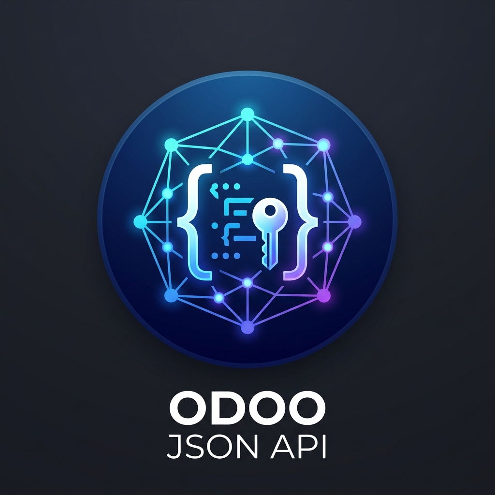
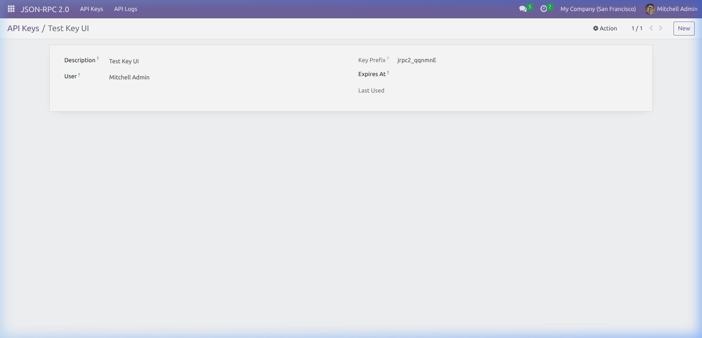
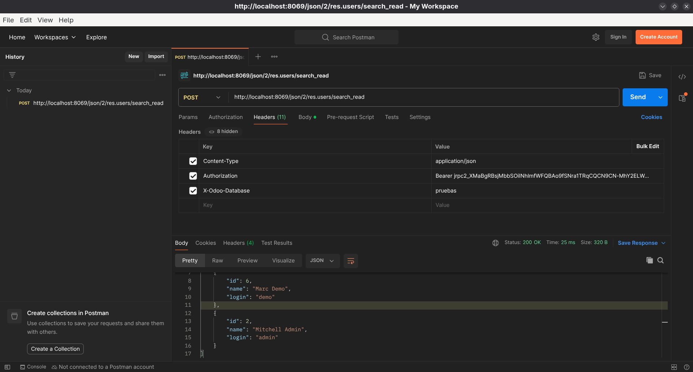
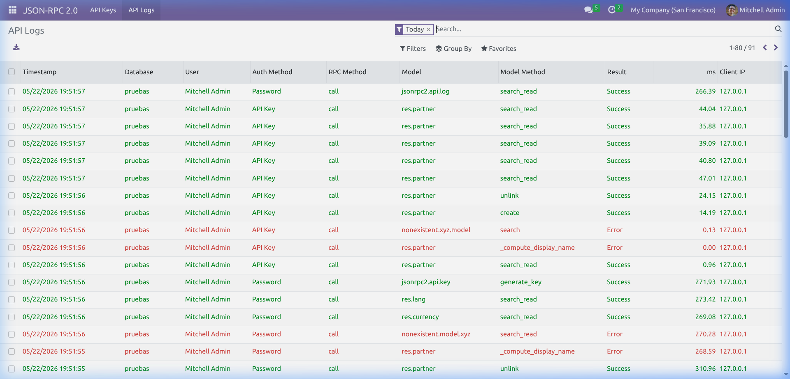

<link href="https://fonts.googleapis.com/css2?family=Montserrat:wght@400;600;700;800&amp;family=Fira+Code:wght@400;500&amp;display=swap" rel="stylesheet" />

<section class="oe_container" style="font-family: 'Montserrat', 'Segoe UI', Arial, sans-serif; background-color: #ffffff; padding: 40px 0;">
    <div class="oe_row oe_padded">

        <!-- ═══════════════════ HERO BANNER ═══════════════════ -->
        <div class="col-md-12 text-center" style="margin-bottom: 50px;">
            <div style="display: inline-block; padding: 18px; background: linear-gradient(135deg, #1a2a6c 0%, #2a5298 60%, #3b82f6 100%); border-radius: 32px; box-shadow: 0 12px 40px rgba(26,42,108,0.3); margin-bottom: 28px;">
                
            </div>

            <h1 style="font-size: 36px; color: #1a2a6c; font-weight: 800; letter-spacing: 0.5px; margin-bottom: 12px; line-height: 1.2;">
                JSON/2 API &mdash; Odoo 19 Compatibility Layer
            </h1>
            <p style="font-size: 18px; color: #5c6b73; font-weight: 400; margin-bottom: 28px; max-width: 680px; margin-left: auto; margin-right: auto; line-height: 1.6;">
                Bring the power of Odoo&nbsp;19&rsquo;s modern API to your current Odoo&nbsp;16, 17, or 18 instance &mdash; without migrating.
            </p>

            <div style="margin: 0 0 8px 0;">
                <span style="background: linear-gradient(135deg,#1d9a6c,#28a745); color: white; padding: 9px 20px; border-radius: 50px; font-weight: 700; font-size: 13px; margin: 4px; display: inline-block; letter-spacing: 0.3px;">
                    &#10003;&nbsp; Odoo 16 Ready
                </span>
                <span style="background: linear-gradient(135deg,#0d8ca8,#17a2b8); color: white; padding: 9px 20px; border-radius: 50px; font-weight: 700; font-size: 13px; margin: 4px; display: inline-block; letter-spacing: 0.3px;">
                    &#10003;&nbsp; Odoo 17 Ready
                </span>
                <span style="background: linear-gradient(135deg,#5a3ab5,#6f42c1); color: white; padding: 9px 20px; border-radius: 50px; font-weight: 700; font-size: 13px; margin: 4px; display: inline-block; letter-spacing: 0.3px;">
                    &#10003;&nbsp; Odoo 18 Ready
                </span>
            </div>
        </div>

        <!-- ═══════════════════ INTRO ═══════════════════ -->
        <div class="col-md-10 col-md-offset-1 text-center" style="margin-bottom: 60px;">
            <p style="font-size: 16px; color: #4a4a4a; line-height: 1.9; max-width: 820px; margin: 0 auto;">
                With the arrival of <strong>Odoo 19</strong>, the legacy XML-RPC protocol is formally replaced by the modern,
                high-performance <strong>JSON/2 API</strong>. This industrial-grade bridge module lets your existing Odoo
                instance expose the exact same endpoints &mdash; <code style="background:#f0f4ff;color:#1a2a6c;padding:2px 6px;border-radius:4px;">/json/2/&lt;model&gt;/&lt;method&gt;</code>
                and <code style="background:#f0f4ff;color:#1a2a6c;padding:2px 6px;border-radius:4px;">/jsonrpc2</code> &mdash; so your integrations work today and keep working after the upgrade.
            </p>
        </div>

        <!-- ═══════════════════ FEATURE CARDS ═══════════════════ -->
        <div class="col-md-12" style="margin-bottom: 65px;">
            <h2 style="font-size: 26px; color: #1a2a6c; font-weight: 800; text-align: center; margin-bottom: 40px;">
                Why choose this module?
            </h2>
            <div class="row" style="display: flex; flex-wrap: wrap;">

                <div class="col-md-4 text-center" style="margin-bottom: 24px;">
                    <div style="background: #ffffff; border: 1px solid #e2e8f0; border-radius: 16px; padding: 34px 24px; height: 100%; box-shadow: 0 4px 20px rgba(26,42,108,0.06);">
                        <div style="font-size: 44px; margin-bottom: 16px;">&#128737;&#65039;</div>
                        <h4 style="font-size: 17px; color: #1a2a6c; font-weight: 700; margin-bottom: 12px;">Enterprise-Grade Security</h4>
                        <p style="font-size: 14px; color: #6c757d; line-height: 1.7; margin: 0;">
                            Bearer token validation using timing-safe <code style="font-size:12px;">hmac.compare_digest</code>. Keys are stored as SHA-256 hashes &mdash; never in plain text. Optional expiration dates for every key.
                        </p>
                    </div>
                </div>

                <div class="col-md-4 text-center" style="margin-bottom: 24px;">
                    <div style="background: #ffffff; border: 1px solid #e2e8f0; border-radius: 16px; padding: 34px 24px; height: 100%; box-shadow: 0 4px 20px rgba(26,42,108,0.06);">
                        <div style="font-size: 44px; margin-bottom: 16px;">&#128301;</div>
                        <h4 style="font-size: 17px; color: #1a2a6c; font-weight: 700; margin-bottom: 12px;">Dual Endpoint Support</h4>
                        <p style="font-size: 14px; color: #6c757d; line-height: 1.7; margin: 0;">
                            RESTful <code style="font-size:12px;">/json/2/</code> interface (Odoo 19 native) and the classic <code style="font-size:12px;">/jsonrpc2</code> envelope. One module, total compatibility with every integrator and automation script.
                        </p>
                    </div>
                </div>

                <div class="col-md-4 text-center" style="margin-bottom: 24px;">
                    <div style="background: #ffffff; border: 1px solid #e2e8f0; border-radius: 16px; padding: 34px 24px; height: 100%; box-shadow: 0 4px 20px rgba(26,42,108,0.06);">
                        <div style="font-size: 44px; margin-bottom: 16px;">&#128202;</div>
                        <h4 style="font-size: 17px; color: #1a2a6c; font-weight: 700; margin-bottom: 12px;">Audit Logs &amp; Debugging</h4>
                        <p style="font-size: 14px; color: #6c757d; line-height: 1.7; margin: 0;">
                            Every API call is automatically logged: client IP, user, duration in milliseconds, HTTP status, and full error traceback. Debug integrations without touching the server console.
                        </p>
                    </div>
                </div>

            </div>
        </div>

        <!-- ═══════════════════ SCREENSHOT ROW 1 ═══════════════════ -->
        <div class="col-md-12" style="background: linear-gradient(135deg,#f8faff 0%,#eef2ff 100%); border-radius: 20px; padding: 50px 40px; margin-bottom: 50px; border: 1px solid #e2e8f0;">
            <div class="row" style="display: flex; align-items: center; flex-wrap: wrap;">
                <div class="col-md-6" style="margin-bottom: 24px; padding-right: 30px;">
                    <span style="background:#1a2a6c;color:#fff;font-size:11px;font-weight:700;padding:4px 12px;border-radius:20px;letter-spacing:1px;text-transform:uppercase;">API Keys</span>
                    <h3 style="font-size: 24px; color: #1a2a6c; font-weight: 800; margin: 16px 0 14px;">
                        Centralized Key Management
                    </h3>
                    <p style="font-size: 15px; color: #4a4a4a; line-height: 1.8; margin-bottom: 18px;">
                        Manage all external API access from a single, clean panel inside Odoo. Each key is associated with an Odoo user, inheriting their access control rules natively &mdash; no extra configuration needed.
                    </p>
                    <ul style="padding-left: 18px; color: #5c6b73; font-size: 14px; line-height: 2;">
                        <li>Full administrative control over who can access the API.</li>
                        <li>Real-time Active / Archived status per key.</li>
                        <li>Automatic expiration date support.</li>
                    </ul>
                </div>
                <div class="col-md-6 text-center">
                    <div style="border-radius: 14px; overflow: hidden; box-shadow: 0 16px 40px rgba(26,42,108,0.18); border: 2px solid #c7d5f0;">
                        
                    </div>
                </div>
            </div>
        </div>

        <!-- ═══════════════════ SCREENSHOT ROW 2 ═══════════════════ -->
        <div class="col-md-12" style="padding: 10px 0; margin-bottom: 50px;">
            <div class="row" style="display: flex; align-items: center; flex-wrap: wrap; flex-direction: row-reverse;">
                <div class="col-md-6" style="margin-bottom: 24px; padding-left: 30px;">
                    <span style="background:#6f42c1;color:#fff;font-size:11px;font-weight:700;padding:4px 12px;border-radius:20px;letter-spacing:1px;text-transform:uppercase;">Live Test</span>
                    <h3 style="font-size: 24px; color: #1a2a6c; font-weight: 800; margin: 16px 0 14px;">
                        Works with Any HTTP Client
                    </h3>
                    <p style="font-size: 15px; color: #4a4a4a; line-height: 1.8; margin-bottom: 18px;">
                        Test the API instantly from Postman, Insomnia, curl, or any HTTP client. The screenshot shows a live call to <code style="font-size:13px;background:#f0f4ff;color:#1a2a6c;padding:2px 6px;border-radius:4px;">/json/2/res.users/search_read</code> returning a <strong>200 OK in 25&nbsp;ms</strong> &mdash; authenticated with a Bearer token and the <code style="font-size:13px;background:#f0f4ff;color:#1a2a6c;padding:2px 6px;border-radius:4px;">X-Odoo-Database</code> header.
                    </p>
                    <ul style="padding-left: 18px; color: #5c6b73; font-size: 14px; line-height: 2;">
                        <li>Standard HTTP &mdash; no proprietary SDK needed.</li>
                        <li>Compatible with Postman, curl, Python, Node.js&hellip;</li>
                        <li>JSON response, standard HTTP status codes.</li>
                    </ul>
                </div>
                <div class="col-md-6 text-center">
                    <div style="border-radius: 14px; overflow: hidden; box-shadow: 0 16px 40px rgba(111,66,193,0.18); border: 2px solid #d5c5f5;">
                        
                    </div>
                </div>
            </div>
        </div>

        <!-- ═══════════════════ SCREENSHOT ROW 3 ═══════════════════ -->
        <div class="col-md-12" style="background: linear-gradient(135deg,#f8faff 0%,#eef2ff 100%); border-radius: 20px; padding: 50px 40px; margin-bottom: 50px; border: 1px solid #e2e8f0;">
            <div class="row" style="display: flex; align-items: center; flex-wrap: wrap;">
                <div class="col-md-6" style="margin-bottom: 24px; padding-right: 30px;">
                    <span style="background:#17a2b8;color:#fff;font-size:11px;font-weight:700;padding:4px 12px;border-radius:20px;letter-spacing:1px;text-transform:uppercase;">Monitoring</span>
                    <h3 style="font-size: 24px; color: #1a2a6c; font-weight: 800; margin: 16px 0 14px;">
                        Logs &amp; Real-Time Debugging
                    </h3>
                    <p style="font-size: 15px; color: #4a4a4a; line-height: 1.8; margin-bottom: 18px;">
                        Shopify sync failing? Amazon connector throwing errors? The <strong>API Logs</strong> view records every incoming call with surgical precision &mdash; client IP, response time (ms), ORM method called, and the exact error traceback.
                    </p>
                    <ul style="padding-left: 18px; color: #5c6b73; font-size: 14px; line-height: 2;">
                        <li>Client IP tracking per request.</li>
                        <li>Millisecond-precision duration logs.</li>
                        <li>Full error trace in developer mode.</li>
                    </ul>
                </div>
                <div class="col-md-6 text-center">
                    <div style="border-radius: 14px; overflow: hidden; box-shadow: 0 16px 40px rgba(23,162,184,0.15); border: 2px solid #b3e0eb;">
                        
                    </div>
                </div>
            </div>
        </div>

        <!-- ═══════════════════ QUICK START ═══════════════════ -->
        <div class="col-md-12" style="margin-bottom: 60px;">
            <h2 style="font-size: 24px; color: #1a2a6c; font-weight: 800; text-align: center; margin-bottom: 30px;">
                Quick Start
            </h2>
            <div style="background: #0d1117; border-radius: 16px; padding: 32px 36px; box-shadow: 0 8px 30px rgba(0,0,0,0.2); overflow-x: auto;">
                <div style="font-family: 'Fira Code', 'Consolas', monospace; font-size: 13px; line-height: 2; color: #c9d1d9;">
                    <span style="color:#8b949e;"># 1. Install the module and generate an API key from the menu</span><br />
                    <span style="color:#8b949e;"># 2. Call the REST endpoint (Odoo 19-style):</span><br />
                    <br />
                    <span style="color:#ff7b72;">curl</span> <span style="color:#79c0ff;">-X POST</span> https://your-odoo.com<span style="color:#a5d6ff;">/json/2/res.partner/search_read</span> \<br />
                    &nbsp;&nbsp;&nbsp;&nbsp;<span style="color:#79c0ff;">-H</span> <span style="color:#a5d6ff;">"Authorization: Bearer <span style="color:#ffa657;">YOUR_API_KEY</span>"</span> \<br />
                    &nbsp;&nbsp;&nbsp;&nbsp;<span style="color:#79c0ff;">-H</span> <span style="color:#a5d6ff;">"X-Odoo-Database: <span style="color:#ffa657;">your-db</span>"</span> \<br />
                    &nbsp;&nbsp;&nbsp;&nbsp;<span style="color:#79c0ff;">-H</span> <span style="color:#a5d6ff;">"Content-Type: application/json"</span> \<br />
                    &nbsp;&nbsp;&nbsp;&nbsp;<span style="color:#79c0ff;">-d</span> <span style="color:#a5d6ff;">'{"domain": [], "fields": ["name","email"], "limit": 5}'</span><br />
                    <br />
                    <span style="color:#8b949e;"># 3. Or use the classic JSON-RPC 2.0 envelope:</span><br />
                    <span style="color:#ff7b72;">curl</span> <span style="color:#79c0ff;">-X POST</span> https://your-odoo.com<span style="color:#a5d6ff;">/jsonrpc2</span> \<br />
                    &nbsp;&nbsp;&nbsp;&nbsp;<span style="color:#79c0ff;">-H</span> <span style="color:#a5d6ff;">"Authorization: Bearer <span style="color:#ffa657;">YOUR_API_KEY</span>"</span> \<br />
                    &nbsp;&nbsp;&nbsp;&nbsp;<span style="color:#79c0ff;">-d</span> <span style="color:#a5d6ff;">'{"jsonrpc":"2.0","method":"call","id":1,"params":{"model":"res.partner","method":"search_read","args":[[]],"kwargs":{"fields":["name"],"limit":5}}}'</span>
                </div>
            </div>
        </div>

        <!-- ═══════════════════ HOW TO USE ═══════════════════ -->
        <div class="col-md-12" style="margin-bottom: 60px;">
            <h2 style="font-size: 26px; color: #1a2a6c; font-weight: 800; text-align: center; margin-bottom: 12px;">
                How to Use
            </h2>
            <p style="text-align:center; font-size:15px; color:#6c757d; margin-bottom:40px;">
                From installation to your first authenticated API call in under 5&nbsp;minutes.
            </p>

            <!-- Steps -->
            <div class="row" style="display:flex; flex-wrap:wrap; margin-bottom:40px;">

                <div class="col-md-3 text-center" style="margin-bottom:20px; padding:0 12px;">
                    <div style="background:#f0f4ff; border-radius:50%; width:52px; height:52px; line-height:52px; font-size:20px; font-weight:800; color:#1a2a6c; margin:0 auto 14px;">1</div>
                    <h4 style="font-size:15px; color:#1a2a6c; font-weight:700; margin-bottom:8px;">Install the Module</h4>
                    <p style="font-size:13px; color:#6c757d; line-height:1.6;">Place the folder in your <code style="font-size:12px;">addons</code> path, restart Odoo, update the app list, and click <strong>Install</strong>.</p>
                </div>

                <div class="col-md-3 text-center" style="margin-bottom:20px; padding:0 12px;">
                    <div style="background:#f0f4ff; border-radius:50%; width:52px; height:52px; line-height:52px; font-size:20px; font-weight:800; color:#1a2a6c; margin:0 auto 14px;">2</div>
                    <h4 style="font-size:15px; color:#1a2a6c; font-weight:700; margin-bottom:8px;">Generate an API Key</h4>
                    <p style="font-size:13px; color:#6c757d; line-height:1.6;">Go to <strong>JSON-RPC 2.0 &rsaquo; Generate API Key</strong>. Choose a user, set an optional expiry date, and click <strong>Generate Key</strong>. Copy the key immediately &mdash; it&rsquo;s shown only once.</p>
                </div>

                <div class="col-md-3 text-center" style="margin-bottom:20px; padding:0 12px;">
                    <div style="background:#f0f4ff; border-radius:50%; width:52px; height:52px; line-height:52px; font-size:20px; font-weight:800; color:#1a2a6c; margin:0 auto 14px;">3</div>
                    <h4 style="font-size:15px; color:#1a2a6c; font-weight:700; margin-bottom:8px;">Send Your Request</h4>
                    <p style="font-size:13px; color:#6c757d; line-height:1.6;">Call <code style="font-size:12px;">/json/2/&lt;model&gt;/&lt;method&gt;</code> with the <code style="font-size:12px;">Authorization: Bearer</code> header. Use any HTTP client: curl, Python, Postman, Node.js&hellip;</p>
                </div>

                <div class="col-md-3 text-center" style="margin-bottom:20px; padding:0 12px;">
                    <div style="background:#f0f4ff; border-radius:50%; width:52px; height:52px; line-height:52px; font-size:20px; font-weight:800; color:#1a2a6c; margin:0 auto 14px;">4</div>
                    <h4 style="font-size:15px; color:#1a2a6c; font-weight:700; margin-bottom:8px;">Monitor in Odoo</h4>
                    <p style="font-size:13px; color:#6c757d; line-height:1.6;">Check <strong>JSON-RPC 2.0 &rsaquo; API Logs</strong> for a real-time audit trail of every call: IP, user, duration, status, and any error trace.</p>
                </div>

            </div>

            <!-- Code examples: REST endpoint -->
            <div style="margin-bottom:20px;">
                <div style="display:flex; gap:8px; margin-bottom:0;">
                    <span style="background:#1a2a6c; color:#fff; font-size:12px; font-weight:700; padding:6px 16px; border-radius:8px 8px 0 0; letter-spacing:0.5px;">&#9654;&nbsp; REST — /json/2/ &nbsp;(Odoo 19 style)</span>
                </div>
                <div style="background:#0d1117; border-radius:0 12px 12px 12px; padding:28px 32px; overflow-x:auto;">
                    <div style="font-family:'Fira Code','Consolas',monospace; font-size:13px; line-height:2; color:#c9d1d9;">
                        <span style="color:#8b949e;"># Search partners (GET-style via POST)</span><br />
                        <span style="color:#ff7b72;">curl</span> <span style="color:#79c0ff;">-X POST</span> https://your-odoo.com<span style="color:#a5d6ff;">/json/2/res.partner/search_read</span> \<br />
                        &nbsp;&nbsp;<span style="color:#79c0ff;">-H</span> <span style="color:#a5d6ff;">"Content-Type: application/json"</span> \<br />
                        &nbsp;&nbsp;<span style="color:#79c0ff;">-H</span> <span style="color:#a5d6ff;">"Authorization: Bearer <span style="color:#ffa657;">jrpc2_your_key_here</span>"</span> \<br />
                        &nbsp;&nbsp;<span style="color:#79c0ff;">-H</span> <span style="color:#a5d6ff;">"X-Odoo-Database: <span style="color:#ffa657;">your_db</span>"</span> \<br />
                        &nbsp;&nbsp;<span style="color:#79c0ff;">-d</span> <span style="color:#a5d6ff;">'{"domain": [["is_company","=",true]], "fields": ["name","email"], "limit": 5}'</span><br />
                        <br />
                        <span style="color:#8b949e;"># Create a record</span><br />
                        <span style="color:#ff7b72;">curl</span> <span style="color:#79c0ff;">-X POST</span> https://your-odoo.com<span style="color:#a5d6ff;">/json/2/res.partner/create</span> \<br />
                        &nbsp;&nbsp;<span style="color:#79c0ff;">-H</span> <span style="color:#a5d6ff;">"Content-Type: application/json"</span> \<br />
                        &nbsp;&nbsp;<span style="color:#79c0ff;">-H</span> <span style="color:#a5d6ff;">"Authorization: Bearer <span style="color:#ffa657;">jrpc2_your_key_here</span>"</span> \<br />
                        &nbsp;&nbsp;<span style="color:#79c0ff;">-H</span> <span style="color:#a5d6ff;">"X-Odoo-Database: <span style="color:#ffa657;">your_db</span>"</span> \<br />
                        &nbsp;&nbsp;<span style="color:#79c0ff;">-d</span> <span style="color:#a5d6ff;">'{"name": "Integration Partner", "email": "api@example.com"}'</span>
                    </div>
                </div>
            </div>

            <!-- Code examples: JSON-RPC 2.0 envelope -->
            <div style="margin-bottom:20px;">
                <div style="display:flex; gap:8px; margin-bottom:0;">
                    <span style="background:#3b4a6b; color:#c9d1d9; font-size:12px; font-weight:700; padding:6px 16px; border-radius:8px 8px 0 0; letter-spacing:0.5px;">&#9654;&nbsp; JSON-RPC 2.0 — /jsonrpc2 &nbsp;(legacy envelope)</span>
                </div>
                <div style="background:#161b22; border-radius:0 12px 12px 12px; padding:28px 32px; overflow-x:auto;">
                    <div style="font-family:'Fira Code','Consolas',monospace; font-size:13px; line-height:2; color:#c9d1d9;">
                        <span style="color:#ff7b72;">curl</span> <span style="color:#79c0ff;">-X POST</span> https://your-odoo.com<span style="color:#a5d6ff;">/jsonrpc2</span> \<br />
                        &nbsp;&nbsp;<span style="color:#79c0ff;">-H</span> <span style="color:#a5d6ff;">"Content-Type: application/json"</span> \<br />
                        &nbsp;&nbsp;<span style="color:#79c0ff;">-H</span> <span style="color:#a5d6ff;">"Authorization: Bearer <span style="color:#ffa657;">jrpc2_your_key_here</span>"</span> \<br />
                        &nbsp;&nbsp;<span style="color:#79c0ff;">-d</span> <span style="color:#a5d6ff;">'{</span><br />
                        &nbsp;&nbsp;&nbsp;&nbsp;<span style="color:#a5d6ff;">"jsonrpc": "2.0", "method": "call", "id": 1,</span><br />
                        &nbsp;&nbsp;&nbsp;&nbsp;<span style="color:#a5d6ff;">"params": {</span><br />
                        &nbsp;&nbsp;&nbsp;&nbsp;&nbsp;&nbsp;<span style="color:#a5d6ff;">"db": "<span style="color:#ffa657;">your_db</span>",</span><br />
                        &nbsp;&nbsp;&nbsp;&nbsp;&nbsp;&nbsp;<span style="color:#a5d6ff;">"model": "res.partner", "method": "search_read",</span><br />
                        &nbsp;&nbsp;&nbsp;&nbsp;&nbsp;&nbsp;<span style="color:#a5d6ff;">"args": [[]], "kwargs": {"fields": ["name"], "limit": 5}</span><br />
                        &nbsp;&nbsp;&nbsp;&nbsp;<span style="color:#a5d6ff;">}</span><br />
                        &nbsp;&nbsp;<span style="color:#a5d6ff;">}'</span>
                    </div>
                </div>
            </div>

            <!-- Error response -->
            <div style="background:#fff8f0; border-left:4px solid #fd7e14; border-radius:0 12px 12px 0; padding:20px 24px;">
                <h4 style="font-size:14px; font-weight:700; color:#7c3500; margin:0 0 8px;">&#9888;&nbsp; Error Response Format</h4>
                <p style="font-size:13px; color:#6c757d; margin:0 0 10px;">
                    On failure, <code>/json/2/</code> returns a semantic HTTP status code (400, 401, 403, 500) and a consistent JSON body:
                </p>
                <div style="background:#0d1117; border-radius:8px; padding:16px 20px; font-family:'Fira Code','Consolas',monospace; font-size:12px; line-height:1.8; color:#c9d1d9;">
                    <span style="color:#79c0ff;">{</span><br />
                    &nbsp;&nbsp;<span style="color:#a5d6ff;">"name"</span><span style="color:#c9d1d9;">: </span><span style="color:#a5d6ff;">"odoo.exceptions.AccessError"</span><span style="color:#c9d1d9;">,</span><br />
                    &nbsp;&nbsp;<span style="color:#a5d6ff;">"message"</span><span style="color:#c9d1d9;">: </span><span style="color:#a5d6ff;">"You do not have permission to access this document."</span><span style="color:#c9d1d9;">,</span><br />
                    &nbsp;&nbsp;<span style="color:#a5d6ff;">"debug"</span><span style="color:#c9d1d9;">: </span><span style="color:#8b949e;">"&lt;traceback — only in Odoo debug mode&gt;"</span><br />
                    <span style="color:#79c0ff;">}</span>
                </div>
            </div>
        </div>

        <!-- ═══════════════════ CTA FOOTER ═══════════════════ -->
        <div class="col-md-12 text-center" style="padding: 50px 40px; background: linear-gradient(135deg, #1a2a6c 0%, #2a5298 50%, #1e40af 100%); border-radius: 24px; box-shadow: 0 12px 40px rgba(26,42,108,0.35);">
            <div style="font-size: 48px; margin-bottom: 20px;">&#128640;</div>
            <h2 style="font-size: 30px; font-weight: 800; color: #ffffff; margin-bottom: 16px; letter-spacing: 0.3px;">
                Ready to connect your Odoo?
            </h2>
            <p style="font-size: 16px; color: #bfcfff; max-width: 680px; margin: 0 auto 32px; line-height: 1.8;">
                Install the module, generate your first API key, and start making secure JSON/2 requests immediately.
                Full backward compatibility &mdash; zero performance trade-offs.
            </p>
            <div style="display: inline-flex; gap: 16px; flex-wrap: wrap; justify-content: center; font-size: 14px; color: #93b4ff; font-weight: 500;">
                <span>&#128274;&nbsp; SHA-256 Key Hashing</span>
                <span style="color:#4a6fa5;">|</span>
                <span>&#9200;&nbsp; Timing-Safe Auth</span>
                <span style="color:#4a6fa5;">|</span>
                <span>&#128196;&nbsp; Full Audit Trail</span>
                <span style="color:#4a6fa5;">|</span>
                <span>&#127758;&nbsp; EN / ES Translations</span>
            </div>
            <div style="margin-top: 30px; font-size: 13px; color: #7a9ae0; opacity: 0.85;">
                Developed and maintained by <strong style="color:#bfcfff;">David Carreres G&oacute;mez</strong> &nbsp;&bull;&nbsp; LGPL-3 License
            </div>
        </div>

    </div>
</section>
